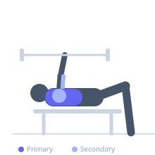
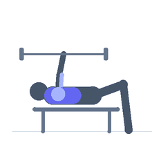

Exercise guide / Chain-Loaded Barbell Bench Press
Chain-Loaded Barbell Bench Press
The Chain-Loaded Bench Press attaches heavy chains to each end of the barbell so that more chain links rest on the floor at the bottom of the movement (reducing effective load) and more links are suspended off the floor at lockout (increasing effective load). This accommodating resistance technique matches the natural strength curve of the press — lighter where you are weakest at the bottom, heavier where you are strongest at the top.
Primary muscles
pectoralis major sternal
pectoralis major clavicular
Secondary muscles
deltoid anterior
triceps lateral head
triceps medial head
Stabilizers
subscapularis
pectoralis minor
Equipment
Standard Barbell
Power Rack (Squat Cage)


Starting position
- Attach chains to each sleeve of the barbell using a small pilot chain looped over the sleeve. Chains should partially deload to the floor at the bottom of the rep. Lie on the bench and grip normally.
Setup
- Loop a pilot chain over each barbell sleeve. Attach the main chains so that roughly half the chain length rests on the floor at the bottom of the movement. Adjust to ensure full chain suspension at lockout.
Steps
- Step 1: Unrack the bar and begin the descent.
- Step 2: Lower the bar to touch the chest as more chain piles onto the floor, reducing load.
- Step 3: Press the bar upward; as it rises, more chain lifts off the floor, increasing load.
- Step 4: Drive to full lockout where the full chain weight is suspended.
Coaching cues
- Press as fast as you can — speed overcomes the increasing chain weight
- Stay tight; the swinging chains create additional stabilization demands
Breathing
- Inhale and brace before the eccentric. Exhale through the sticking point on the concentric.
Range of motion
- Full ROM from chest-touch to lockout, same as standard bench press.
Tempo
- 3-0-X-0 (explosive concentric to maximize accommodating resistance benefit)
Common mistakes
- Chains too short so they never deload at the bottom
- Chains too long so they never fully lift off the floor at lockout
Safety
- Account for chain weight when calculating barbell load — reduce plate weight accordingly
- Use a power rack with safety bars
Training
- strength: 1–5 reps
- hypertrophy: 5–8 reps
- strength: 3–6 sets
- hypertrophy: 3–5 sets
- Rest: {'strength': 240, 'hypertrophy': 120}